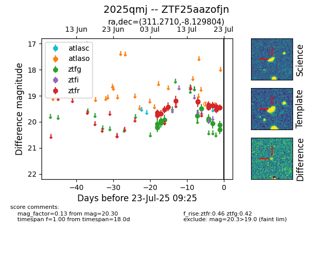

Target ZTF25aazofjn at 2025-07-23 12:37, see:
FINK: fink-portal.org/ZTF25aazofjn
Lasair: lasair-ztf.lsst.ac.uk/objects/ZTF25aazofjn
ALeRCE: alerce.online/object/ZTF25aazofjn
TNS: wis-tns.org/object/2025qmj
YSE: ziggy.ucolick.org/yse/transient_detail/2025qmj
alt names
ZTF25aazofjn (ztf,fink)
2025qmj (tns,yse)
coordinates:
equatorial (ra, dec) = (311.2710,-8.12980)
galactic (l, b) = (38.7628,-28.92637)
photometry
last atlaso=19.32, ztfg=20.30, ztfr=19.45
1 atlaso, 13 ztfg, 14 ztfr detections
